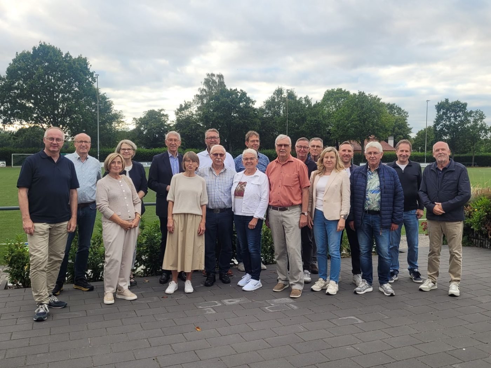
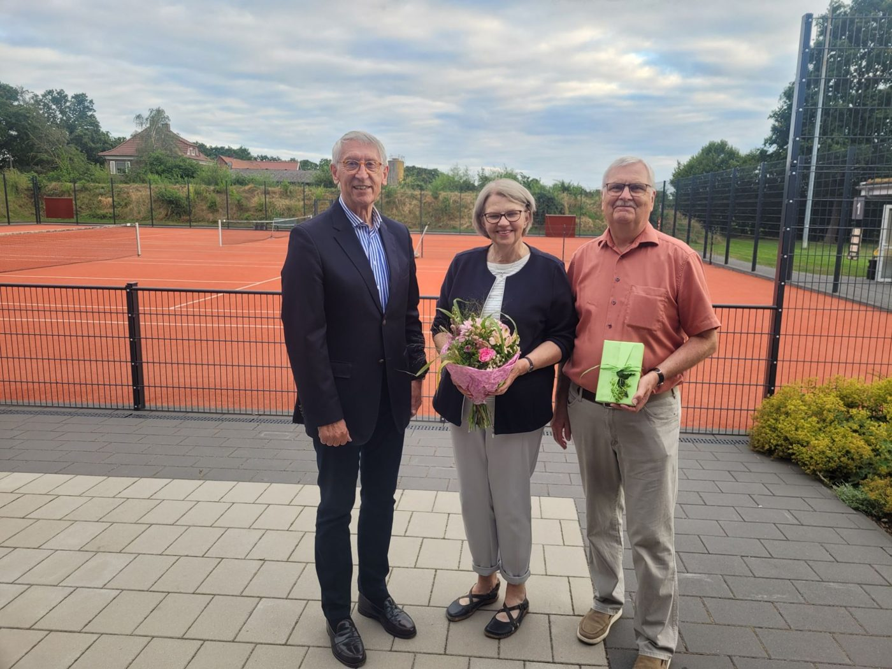

FWG wählt Bernhard Poppenberg zum neuen Vorsitzenden
Mitgliederversammlung im Sportlerheim Lette: Friedhelm Hoberg gibt nach fast 17 Jahren den Vorsitz ab.

Bei der ordentlichen Mitgliederversammlung im Sportlerheim Lette hat die FWG Oelde die Weichen neu gestellt: Nach fast 17 Jahren an der Spitze gab Friedhelm Hoberg den Vorsitz ab. Sein Nachfolger ist Bernhard Poppenberg.
Berichte aus Kreis und Rat
Kreistag: Fraktionsvorsitzende Dorothea Nienkemper berichtete vom Streit mit den Krankenkassen um die Finanzierung von Fehlfahrten der Krankenwagen und vom Ausbau des Bevölkerungsschutzes. Mit den Anträgen anderer Fraktionen setze man sich im Kreishaus sachlich und konstruktiv auseinander. Von der AfD sei bislang kein einziger Antrag zur Beratung vorgelegt worden.
Rückblick: Friedhelm Hoberg blickte auf die Kommunalwahl 2025 zurück. Obwohl drei neue Parteien in den Rat eingezogen sind, sei man mit dem Ergebnis zufrieden: Die FWG-Fraktion bleibt mit fünf Mitgliedern vertreten. Er lobte die hervorragende Zusammenarbeit von Vorstand und Fraktion.
Ratsarbeit: Fraktionsvorsitzender Thorsten Retzlaff betonte, dass die Flut an Anträgen die Arbeit für jedes Ratsmitglied extrem aufwendig mache, und dankte seinem Team und den Unterstützern im Hintergrund. Mit 50 Mitgliedern sei der Stadtrat im Verhältnis zur Einwohnerzahl zu groß.
Sorge um die Stadtfinanzen
Die Haushaltslage sei extrem angespannt, für das laufende Jahr plane die Stadt erneut mit einem deutlichen Defizit. Die Rücklagen, das „Sparkonto für schlechte Zeiten“, seien bald fast aufgebraucht. Vom „Masterplan Finanzen“ ist die FWG bisher wenig überzeugt. Aus der Versammlung kam der Wunsch nach einer öffentlichen Veranstaltung zu den städtischen Finanzen im Herbst, zu der alle interessierten Bürgerinnen und Bürger eingeladen werden sollen.
Abschied und Neuwahl
Friedhelm Hoberg bedankte sich bei seinen Mitstreitern für den langjährigen, vertrauensvollen Weg. Karl-Friedrich Knop würdigte im Namen der FWG sein außerordentliches Engagement. Beide waren sich einig: Gerade heute sei es wichtiger denn je, die Demokratie vor Ort durch bürgernahe und sachorientierte Politik zu stärken.

Bei den anschließenden Neuwahlen wurde der kommunalpolitisch erfahrene Bernhard Poppenberg einstimmig zum neuen 1. Vorsitzenden gewählt. Er bedankte sich für das Vertrauen und freue sich sehr auf die neue Aufgabe.
Der neue Vorstand
- Bernhard PoppenbergVorsitzender
- Achim HakenholtStellv. Vorsitzender
- Alexander FertichKassierer
- Wolf-Rüdiger SoldatSchriftführer
- Hubert BleßBeisitzer
- Friedhelm HobergBeisitzer
- Ludger LückeBeisitzer
- Thomas PopulohBeisitzer
- Thorsten RetzlaffBeisitzer
- Manuela SteuerBeisitzerin
- Harald HerklotzBeisitzer
Im Anschluss an den offiziellen Teil klang der Abend bei Grillwurst und kühlen Getränken aus. Organisiert wurde dieser Teil von Achim Hakenholt und Thomas Populoh, denen die Versammlung ein großes Lob aussprach.